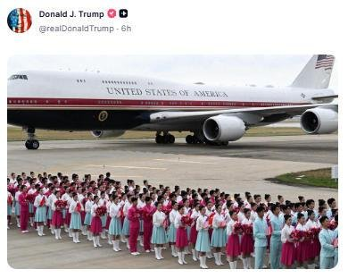

新闻 · 2026-11-22 18:00
特朗普连发30多张照片盛赞APEC会议，照片配文“GOAT”（有史以来最伟大的）
特朗普在从深圳返回美国后，于社交平台‘真实社交’连发30多张APEC会议照片，配文‘GOAT’（有史以来最伟大的），展示中方欢迎仪式及与多国领导人合影，凸显其对此次访问的极高评价。

来源与核验
单一信源报道，未交叉核实
特朗普在从深圳返回美国后，于社交平台‘真实社交’连发30多张APEC会议照片，配文‘GOAT’（有史以来最伟大的），展示中方欢迎仪式及与多国领导人合影，凸显其对此次访问的极高评价。

单一信源报道，未交叉核实